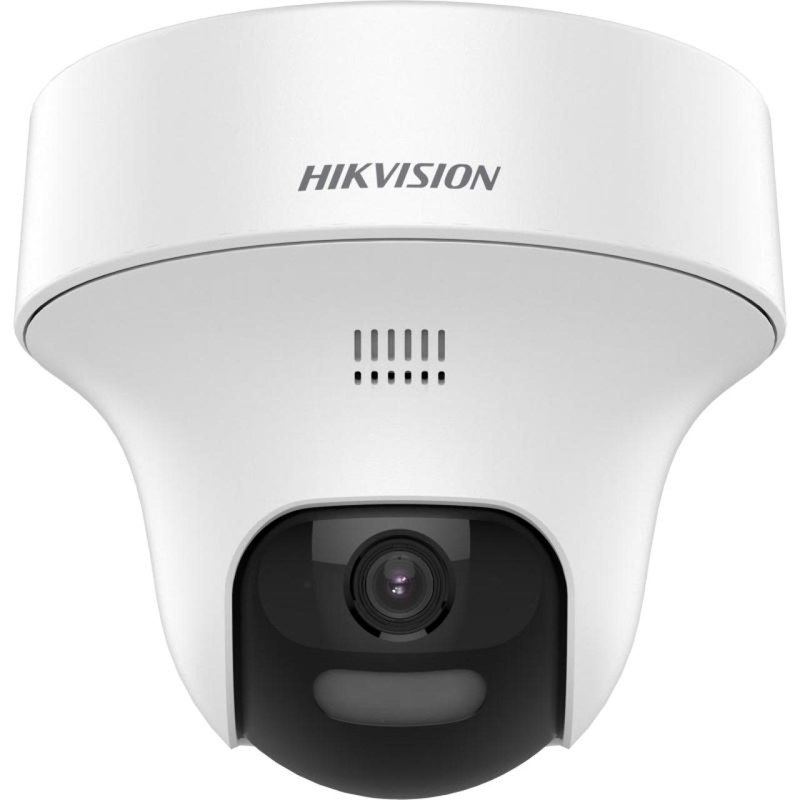

كل المنتجات ← كاميرات وأجهزة هيكفيجن
الموديل: DS-2CE70K0T-PTLXTS

| الماركة | هيكفيجن |
|---|---|
| الموديل | DS-2CE70K0T-PTLXTS |
| نوع المنتج | كاميرا بوليت خارجية |
| الكاميرا | |
| حساس الصورة | 3K CMOS |
| أقصى دقة | 2960 (H) × 1665 (V) |
| أدنى إضاءة | 0.01 لوكس @ (F1.6، AGC مفعّل)، 0 لوكس مع الأشعة تحت الحمراء |
| سرعة الغالق | PAL: 1/12.5 s to 1/50,000 s,NTSC: 1/15 s to 1/50,000 s |
| ليلي/نهاري | فلتر ICR |
| ضبط الزاوية | أفقي: من 0° إلى 350°,رأسي: من 0° إلى 100° |
| نظام الإشارة | PAL/NTSC |
| العدسة | |
| نوع العدسة | 2.8 مم, 3.6 مم fixed lens |
| البعد البؤري وزاوية الرؤية | 2.8 مم, زاوية الرؤية الأفقية: 105°, زاوية الرؤية الرأسية: 62°, زاوية الرؤية القطرية: 131°; 3.6 مم, زاوية الرؤية الأفقية: 80°, زاوية الرؤية الرأسية: 48°, زاوية الرؤية القطرية: 112° |
| تركيب العدسة | M12 |
| الميكروفون | |
| مسافة الالتقاط | في نطاق دائرة حتى 5 أمتار |
| الكمية | 1 |
| السماعة | |
| القدرة المقننة | 2 W |
| مدى السماعة | في نطاق دائرة حتى 5 أمتار |
| الإضاءة | |
| نوع الإضاءة المساعدة | ذكية، أشعة تحت الحمراء، إضاءة بيضاء |
| مدى الإضاءة المساعدة | IR: حتى 25 متر,White Light: حتى 20 متر |
| الصورة | |
| إعدادات الصورة | Anti-banding, Brightness, Sharpness, Smart IR |
| معدل الإطارات | TVI: 3K @10 fps/12.5 fps/20 fps/25 fps, 4 MP @25 fps/30 fps, 1080P @25 fps/30 fps |
| الوضع الليلي/النهاري | تلقائي/ملون |
| النطاق الديناميكي الواسع (WDR) | WDR رقمي |
| تحسين الصورة | DWDR, BLC, HLC, Global, HLS |
| تقليل الضوضاء | 2D DNR |
| توازن اللون الأبيض | Auto, Manual |
| الصوت | |
| وظيفة الصوت | Echo Cancellation, AI Noise Reduction, Automatic Gain Control |
| الواجهات | |
| إخراج الفيديو | 1 HD analog output |
| الإنذار | Flashing Light Alarm (Red & Blue) |
| عام | |
| الطاقة | 12 VDC ± 25%, max. 11.9 W, *You are recommended to use one power adapter to supply the power for one camera. If a high-impedance cable is used (such as the 18 m extension cable in the kit package), an 18 VDC adapter is required. |
| الخامة | بلاستيك |
| الأبعاد | Ø123.7 مم × 110.8 مم (4.87" × 4.36") |
| ظروف التشغيل | من -40 °C إلى 60 °C (من -40 °F إلى 140 °F). رطوبة 90% أو أقل (بدون تكثيف) |
| الاتصال | HIKVISION-C |
| اللغة | الإنجليزية |